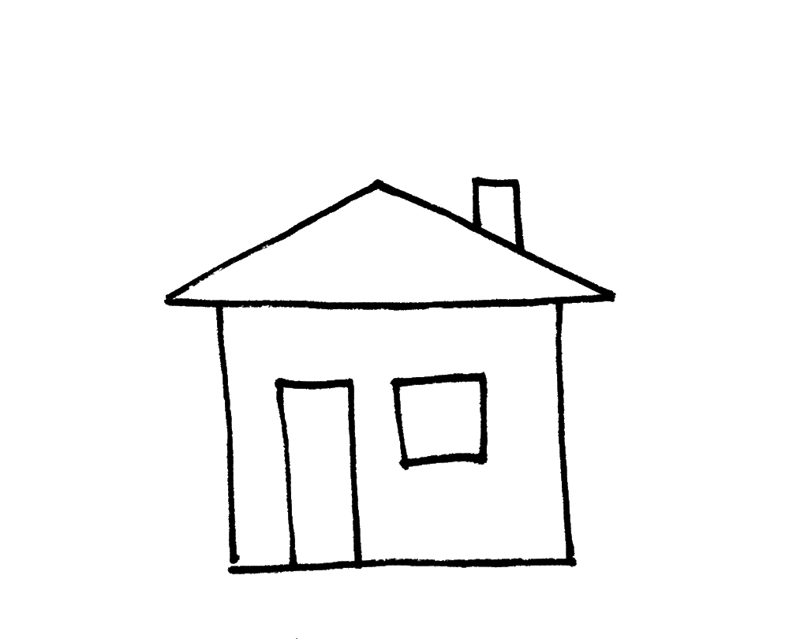
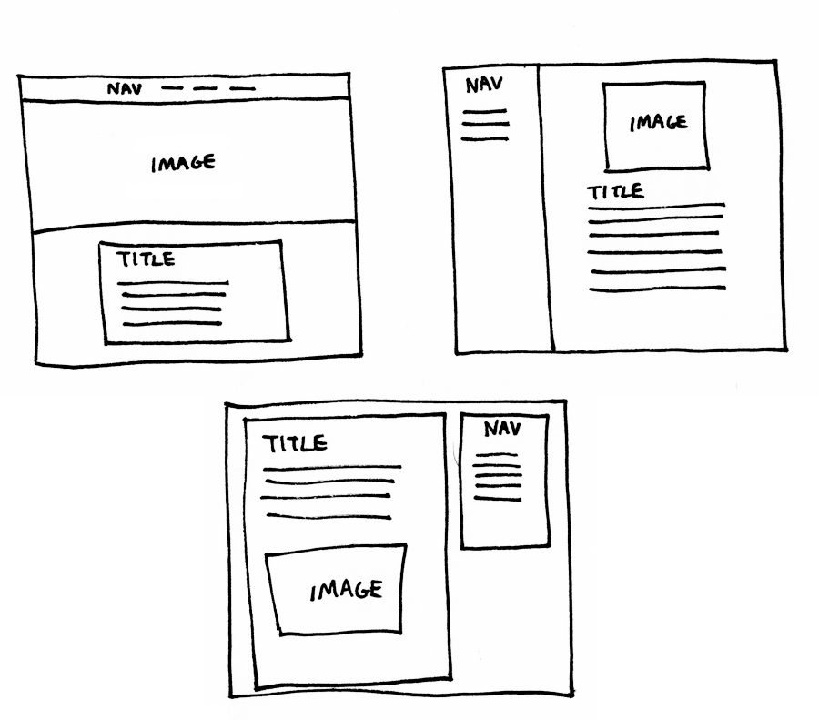

Building blocks of
code
Building your HTML and making it look nice with CSS is a little bit like building a house.

The designer and architect — web designer and user experience (UX) designer — draw out and design the look and feel of the house (web design), as well as creating blueprints (wireframes).
User Experience Designer creates outline of website, Web Designer uses that outline and makes it look nice.
Then, we build the frame of the house, which is HTML. HTML lays out the foundation and structure of the website.
HTML lays out the structure of the website.
CSS tells the HTML what to look like. It can change an element's colour, size, position, shape, and more. CSS is the decorating of the house - everything from wall colour to roof tile to shape of the windows. CSS can also handle minor interactions
like changing a button's colour when you hover over it, but for more user advanced interaction, we would need to use Javascript.
CSS tells HTML what to do. Usually it's to make it look good. (CSS got HTML's back.)
To complete the analogy, the back-end code would be the electricians, plumbers, etc. coming in to put in wiring for electricity to the light switches and pipes so that you would have running water when you turn on the faucet.
There are also other components to creating your own website and putting it online, just like how there are prerequisites to owning a house. You would have to purchase a plot of land to place your house (a host to host your website) and an address so
that people can get to your cool digs (a domain, like a .com or .ca).

The HTML structure is the same but CSS can tell the elements to move wherever.